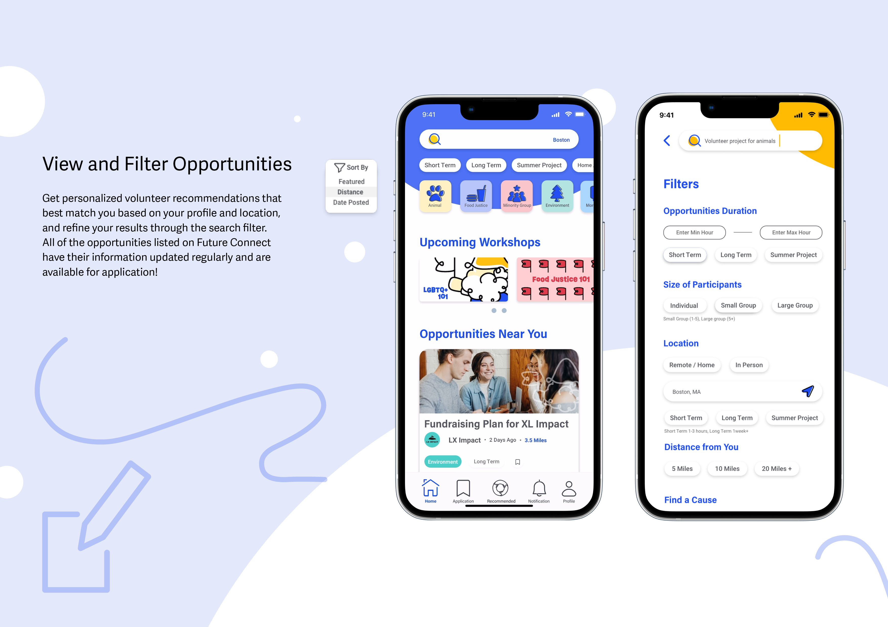
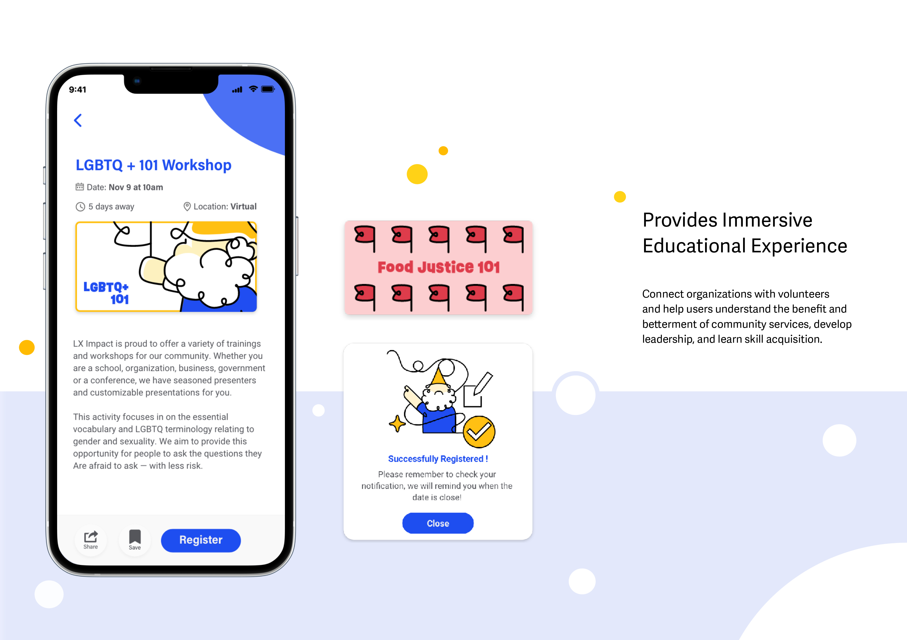
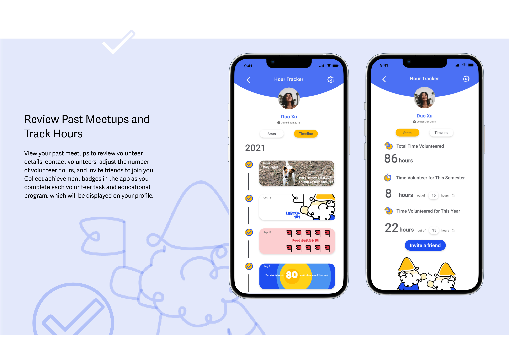

Challenge
The pandemic posed a significant challenge, limiting in-person opportunities and complicating the already demanding volunteer process with mask protocols and restrictions. To address this, Future Connect provided personalized volunteer recommendations tailored to students' interests, fostering stronger connections with their communities and encouraging long-term participation.Future Connect helps high school students search for and apply to volunteer opportunities that fulfill their community service requirements.
Highlights



Defining Users
Adolescence is a critical phase for identity development, where individuals establish goals, values, and beliefs. Future Connect targets 12-18-year-olds, as this age group is most likely to benefit from guided community engagement.
-10 (dragged).png)


Key insights included:
- Students often found the requirements for school volunteering overwhelmingly complex.
- Finding suitable opportunities was stressful and time-consuming.
- Organizations frequently failed to update their information in real time.
User Journey
Based on these insights, we created Jade, a high school freshman seeking volunteer work during the pandemic. We were advised to narrow our focus, so we concentrated on in-person volunteering and updated our journey map to reflect this.


Our Goals
After analyzing our user research and feedback, we determined that our solution needed to meet the following goals:
- Help high school students looking for opportunities best fit their interests quickly and easily.
- Encourage students to complete community service hours and understand the importance of community service values.
Solution Validation
Based on this, we validated our new solution method of creating a review platform through a qualtrics survey on several local highschool Reddit page where it resulted in 66% of participants responding that they are interested in a new technology to find volunteer opprtunities!!!
User Flow
We created a user flow to visualize how students would navigate the app, from searching for opportunities to tracking their progress. Low-fidelity wireframes allowed us to align with the development team and ensure feasibility.

MVP Features
After much refinement, the team narrowed our MVP to 3 major features/ pages for the app:
- Home: dashboard for browsing and filtering volunteer opportunities
- Workshops: Provide educational experiences, connect organizations with volunteers,
help students understand impact of community service, and acquire new skills. - Profile: A space for students to update their preferences, track their progress, and invite friends to co-volunteer.
Crafting Visual Identity
As the lead designer, I had the opportunity to craft the brand identity and design system for the Future Connect app. Developing a cohesive design system ensured consistency across the entire app, enhancing both usability and visual representation.
During our user research, we discovered that two of our interviewees were colorblind. To ensure inclusivity, we intentionally chose a color scheme centered around blue and yellow, which are more accessible for users with color vision deficiencies. The app’s logo features three interconnected arms forming a circle, symbolizing collaboration, support, and the spirit of helping one another—core values that reflect the mission of Future Connect.
During our user research, we discovered that two of our interviewees were colorblind. To ensure inclusivity, we intentionally chose a color scheme centered around blue and yellow, which are more accessible for users with color vision deficiencies. The app’s logo features three interconnected arms forming a circle, symbolizing collaboration, support, and the spirit of helping one another—core values that reflect the mission of Future Connect.
Final Thoughts
Community service fosters a sense of belonging and brings hope for a post-pandemic future. Through this project, my teammates and I came to appreciate the inherent value of community service and the often-overlooked presence of the color blindness community among young people in high school culture. Interviewing other students who were eager to explore deeper, more meaningful volunteer work was eye-opening—many saw community service as a way to support one another and rebuild a stronger future beyond the pandemic.
Our research revealed that a lack of awareness is one of the main reasons high school students don’t actively volunteer beyond required hours. To make the educational aspect of our app more immersive, we could integrate learning opportunities into the application process. For example, on the application details or notification pages, users could receive recommendations for workshops related to their preferred volunteer categories. Additionally, pop-ups could provide bite-sized insights about volunteering, allowing users to learn about community service passively.
Our research revealed that a lack of awareness is one of the main reasons high school students don’t actively volunteer beyond required hours. To make the educational aspect of our app more immersive, we could integrate learning opportunities into the application process. For example, on the application details or notification pages, users could receive recommendations for workshops related to their preferred volunteer categories. Additionally, pop-ups could provide bite-sized insights about volunteering, allowing users to learn about community service passively.